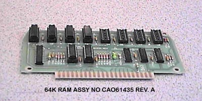

The 64K Memory Module (By Atari)

This 64K memory module was actually found by accident in a box of assorted
memory cards. Upon closer inspection it was noticed that the
card had a CAO number printed on it. This was a standard Atari
parts numbering assignment header used on all its parts, so even though
the word Atari or the Fuji symbol doesn't appear anywhere on this memory
module, it is believed that this may very well have been an unreleased
64k memory module for the Atari 800 by Atari.